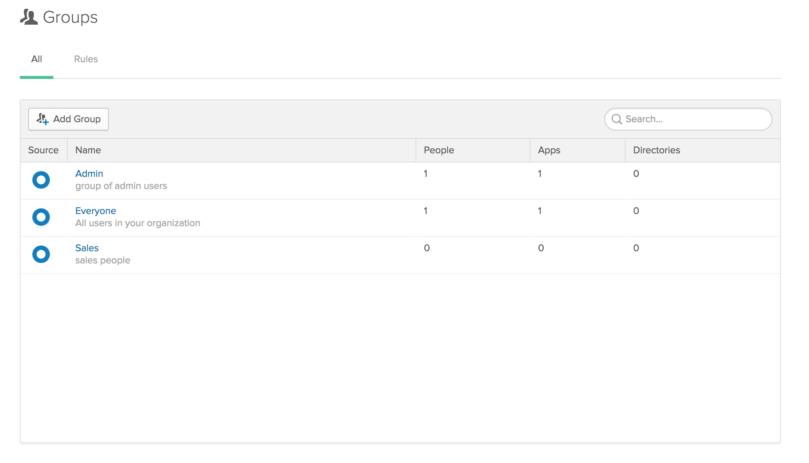
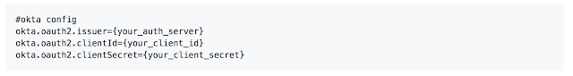
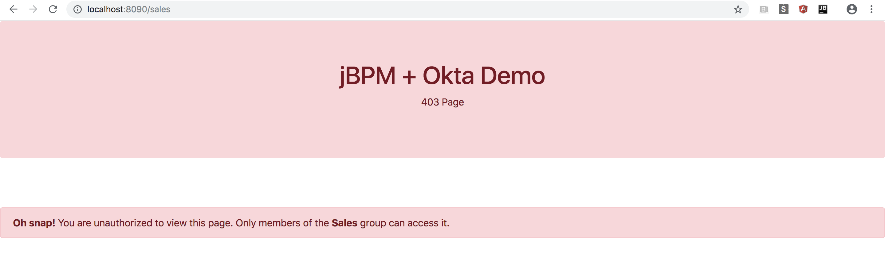
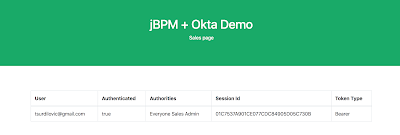

jBPM Business Apps and Okta Single Sign-on (SSO)
Wanted to showcase a new jBPM Business Applications demo that includes easy
integration with the Okta identity management service.
The demo uses the developer.okta.com setup and the Okta Spring boot starter to quickly set up SSO for our jBPM Business App. It also shows how easy it is to restrict access to certain pages of your jBPM Business Application using the authentication info and identity setup in Okta.
Demo source code is on github.
The demo requires you to make an account on developer.okta.com (its free) and create an Okta application and set up two group called “Admin” and “Sales”
 |
| Okta group setup |
Only other configuration is in the your apps application.properties file:
 |
| application.properties setup |
All of this information you get for free once you create an account and an application on the Okta developer site.
 |
| Demo app 403 page |
Otherwise you will be able to access it:
 |
| Demo sales page |
The apps index page is authorized to users that are in the “Admin” group that you have set up in Okta.

{kind=link}
{kind=link}
{kind=link}
{kind=link}